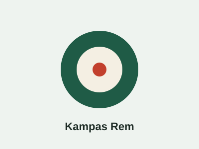
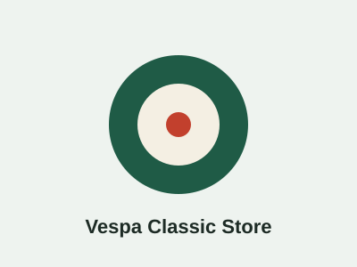
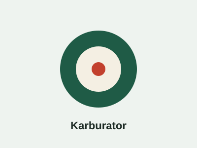
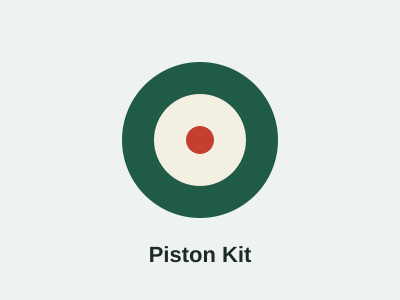
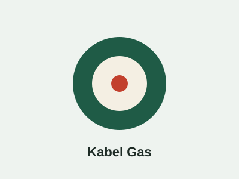
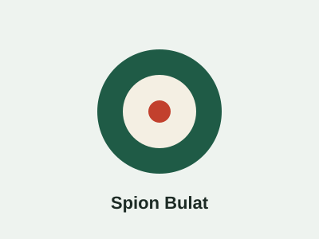
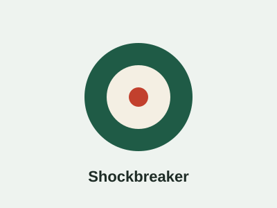

Kaki-kaki dan Rem
Kampas Rem Vespa PX
Material tahan panas, cocok untuk pemakaian harian dan touring.
Rp 65.000Beli SekarangCari suku cadang Vespa 2-tak seperti kampas rem, karburator, piston kit, dan shockbreaker dengan info kecocokan tipe yang jelas. Pilih kualitas lokal, aftermarket, atau original sesuai kebutuhan dan anggaran Anda.
Lihat Produk Tanya Admin
Temukan komponen berdasarkan bagian motor agar pencarian lebih cepat.
Piston kit, karburator, filter, dan gasket untuk performa mesin 2-tak.
Kampas rem, shockbreaker, dan komponen suspensi.
Kabel gas, kabel kopling, busi, dan perlengkapan kelistrikan.
Spion, jok, lampu, dan aksesoris pelengkap tampilan klasik.
Pilihan komponen yang paling sering dicari pemilik Vespa klasik. Harga di bawah adalah contoh untuk keperluan demo.

Material tahan panas, cocok untuk pemakaian harian dan touring.
Rp 65.000Beli Sekarang
Pasokan bahan bakar stabil untuk mesin 2-tak standar.
Rp 1.250.000Beli Sekarang
Satu set piston, ring, dan pen untuk overhaul mesin.
Rp 480.000Beli Sekarang
Tarikan halus dan awet untuk kenyamanan berkendara.
Rp 85.000Beli Sekarang
Desain retro, mudah dipasang pada setang Vespa lawas.
Rp 140.000Beli Sekarang
Meredam guncangan jalan agar berkendara lebih stabil.
Rp 520.000Beli SekarangSetiap produk mencantumkan tipe Vespa yang kompatibel agar tidak salah beli.
Tersedia varian lokal, aftermarket, dan original sesuai anggaran.
Admin membantu memilih part sebelum Anda memutuskan membeli.
Dikemas rapi dan dikirim ke seluruh Indonesia.
Vespa klasik memiliki banyak varian seperti PX, Super, dan Sprint. Ukuran dan spesifikasi komponen bisa berbeda, jadi pastikan tipe motor sesuai sebelum membeli.
Part lokal cocok untuk anggaran terbatas, part aftermarket menawarkan keseimbangan harga dan mutu, sedangkan part original sesuai untuk restorasi yang mengutamakan keaslian. Baca panduan perawatan Vespa klasik untuk tips lengkapnya.
Pastikan produk baru, lengkap, dan memiliki kebijakan retur yang jelas.
Lihat daftar tipe kompatibel di deskripsi produk, atau kirim tipe dan tahun motor Anda melalui halaman kontak.
Ya, tersedia pilihan original, aftermarket, dan lokal. Jenisnya dicantumkan pada tiap produk.
Lama pengiriman bergantung pada tujuan dan ekspedisi. Estimasi ditampilkan saat checkout.
Hubungi kami untuk konsultasi tipe motor dan stok terbaru.
Hubungi Kami